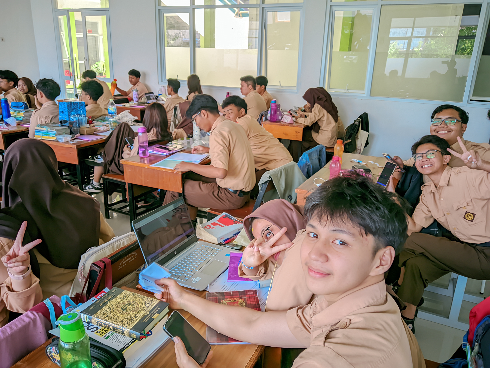
Pelaksanaan Pembelajaran
Dokumentasi pelaksanaan pembelajaran Informatika pada Bab 1 yang membahas peran informatika dalam kehidupan sehari-hari, perkembangan teknologi, serta gambaran pemanfaatan informatika pada masa depan.
Bab 1Dokumentasi visual pelaksanaan Praktik Pengalaman Lapangan 2 pada pembelajaran Informatika di SMA Negeri 12 Bandung. Galeri ini memuat bukti pelaksanaan pembelajaran, penggunaan media dan teknologi, kegiatan praktik, aktivitas nonmengajar, refleksi, serta berbagai kegiatan pendukung selama pelaksanaan PPL 2.
Foto dan dokumentasi kegiatan digunakan sebagai bukti visual untuk memperlihatkan keterlaksanaan praktik pembelajaran, penggunaan media, keterlibatan peserta didik, kegiatan praktik, aktivitas nonmengajar, serta proses refleksi dan pengembangan profesional selama PPL 2.
Dokumentasi pelaksanaan pembelajaran Bab 1 yang membahas perkembangan informatika, pemanfaatan teknologi dalam kehidupan sehari-hari, serta keterkaitannya dengan perkembangan teknologi dan kebutuhan masa depan.

Dokumentasi pelaksanaan pembelajaran Informatika pada Bab 1 yang membahas peran informatika dalam kehidupan sehari-hari, perkembangan teknologi, serta gambaran pemanfaatan informatika pada masa depan.
Bab 1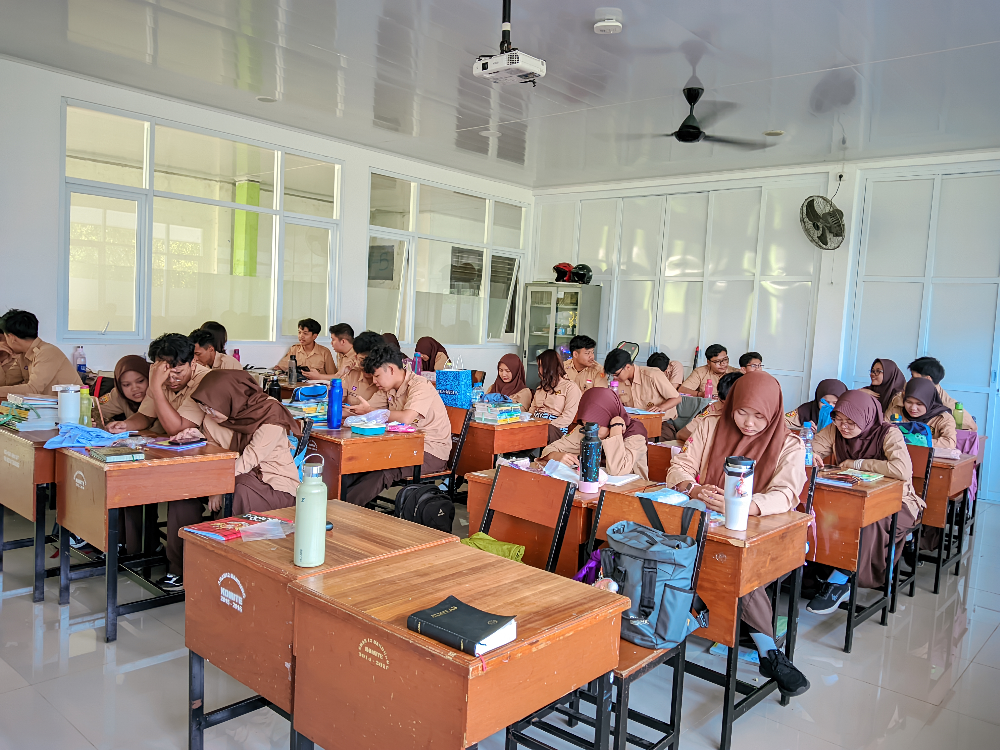
Dokumentasi keterlibatan peserta didik dalam mengikuti proses pembelajaran melalui kegiatan menyimak materi, menjawab pertanyaan, menyampaikan pendapat, berdiskusi, serta menghubungkan materi informatika dengan kehidupan sehari-hari.
Aktivitas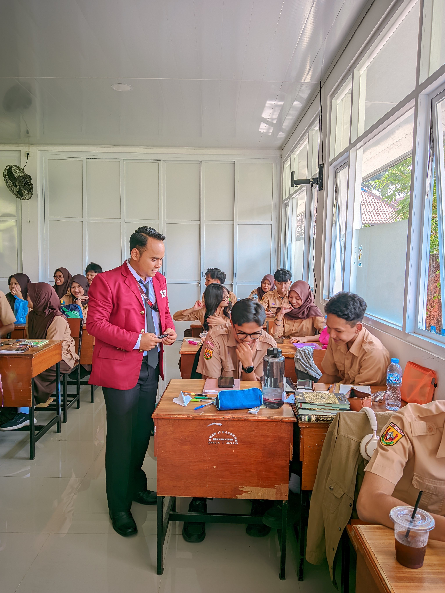
Dokumentasi kegiatan diskusi dan tanya jawab sebagai bagian dari pembelajaran aktif. Peserta didik diberikan kesempatan untuk mengemukakan pendapat, memberikan tanggapan, serta mengaitkan konsep informatika dengan pengalaman dalam kehidupan sehari-hari.
Diskusi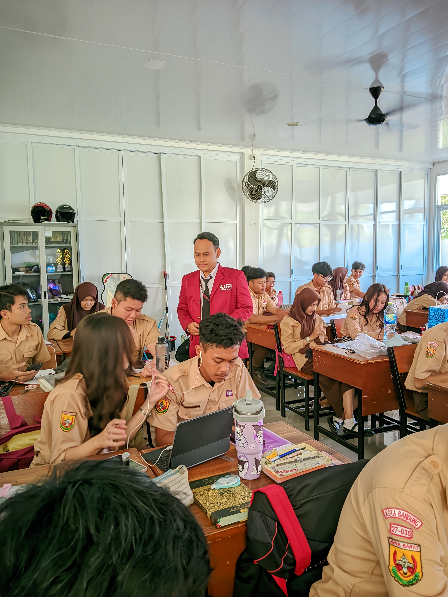
Dokumentasi pelaksanaan ulangan harian pada materi Informatika Sekarang dan di Masa Depan sebagai bagian dari asesmen untuk mengukur pemahaman peserta didik terhadap perkembangan informatika, pemanfaatan teknologi dalam kehidupan sehari-hari, serta dampak dan peluang perkembangan teknologi di masa depan.
AsesmenDokumentasi Bab 1 dapat terus diperbarui seiring perkembangan pembelajaran. Dokumentasi dapat mencakup kegiatan pengenalan perkembangan informatika, pemanfaatan teknologi dalam kehidupan sehari-hari, aktivitas dan keterlibatan peserta didik, diskusi dan tanya jawab, penyampaian pendapat, pengaitan materi dengan pengalaman nyata, asesmen pembelajaran, serta hasil ulangan harian sebagai bagian dari evaluasi pemahaman peserta didik terhadap materi Informatika Sekarang dan di Masa Depan.
Dokumentasi pelaksanaan pembelajaran Sistem Komputer yang mengintegrasikan pemahaman perangkat keras, mikrokontroler, pemrograman, input-output, serta praktik menggunakan Arduino Uno dan Arduino Nano.
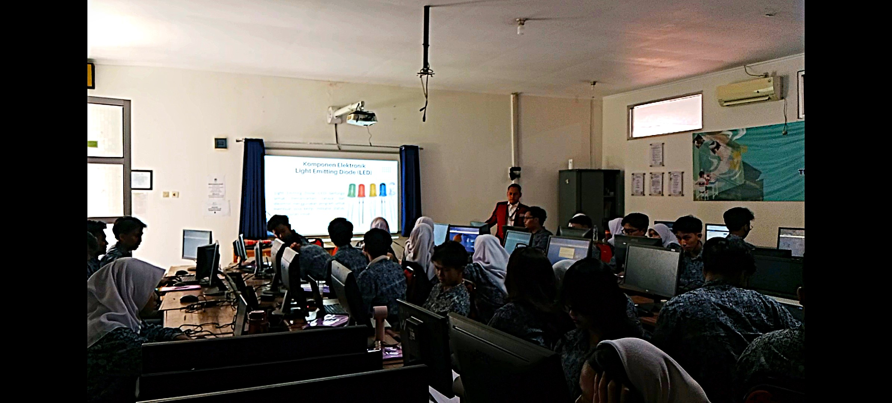
Dokumentasi kegiatan pembelajaran menggunakan Arduino Uno sebagai media praktik untuk menghubungkan konsep sistem komputer dengan pemrograman, input-output, serta pengendalian perangkat secara langsung.
Arduino Uno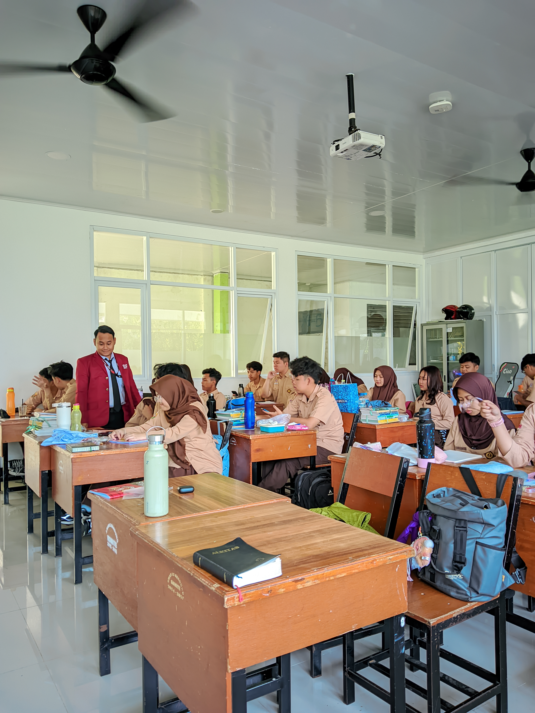
Dokumentasi peserta didik dalam menyusun dan menguji program Arduino Uno dengan menerapkan struktur kode, logika percabangan, input-output, serta memahami hubungan antara program dan respons perangkat.
Pemrograman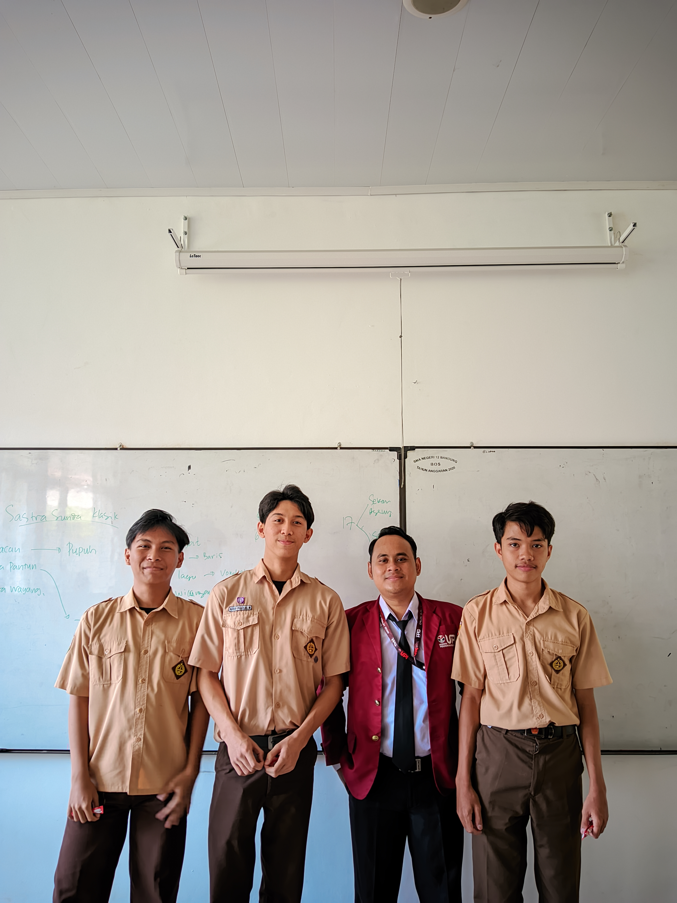
Dokumentasi apresiasi kepada peserta didik yang berhasil menyelesaikan tantangan pemrograman Arduino Uno dengan waktu penyelesaian tercepat. Kegiatan ini menjadi bentuk penghargaan sekaligus motivasi untuk meningkatkan ketelitian, kreativitas, dan kemampuan pemecahan masalah.
Apresiasi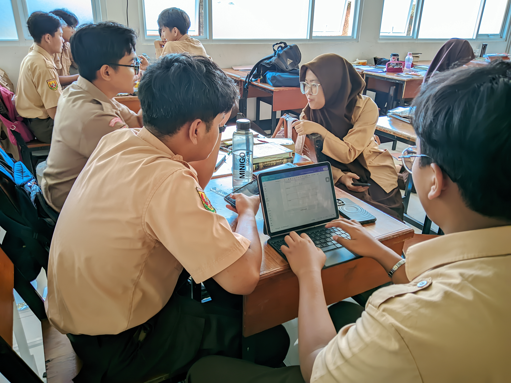
Dokumentasi kegiatan pembelajaran menggunakan Arduino Nano untuk memperluas pengalaman peserta didik dalam memahami mikrokontroler, struktur program, koneksi perangkat, serta penerapan konsep sistem komputer melalui kegiatan praktik.
Arduino Nano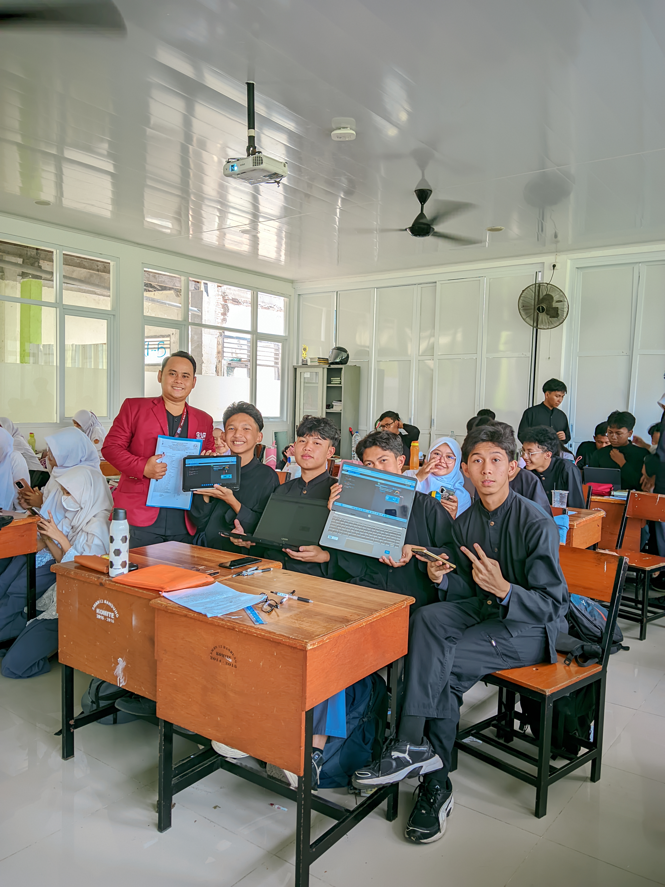
Dokumentasi peserta didik dalam menyusun, menguji, dan melakukan debugging program pada Arduino Nano melalui kegiatan praktikum. Peserta didik belajar menemukan kesalahan kode dan memperbaiki program berdasarkan hasil pengujian.
Praktikum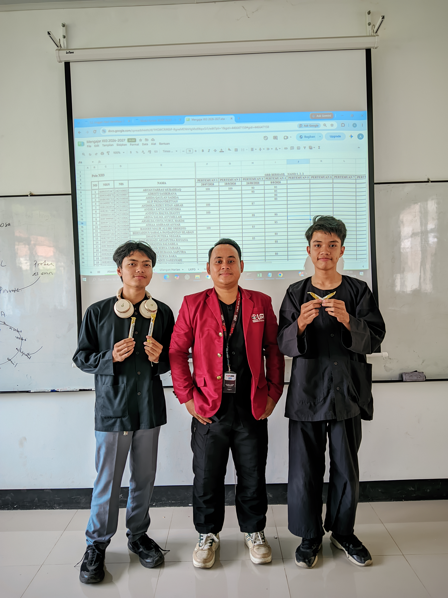
Dokumentasi apresiasi kepada peserta didik yang berhasil menyelesaikan tantangan pemrograman Arduino Nano dengan waktu penyelesaian tercepat. Apresiasi diberikan sebagai motivasi untuk meningkatkan keterampilan pemrograman, ketelitian, dan kemampuan menyelesaikan masalah.
Apresiasi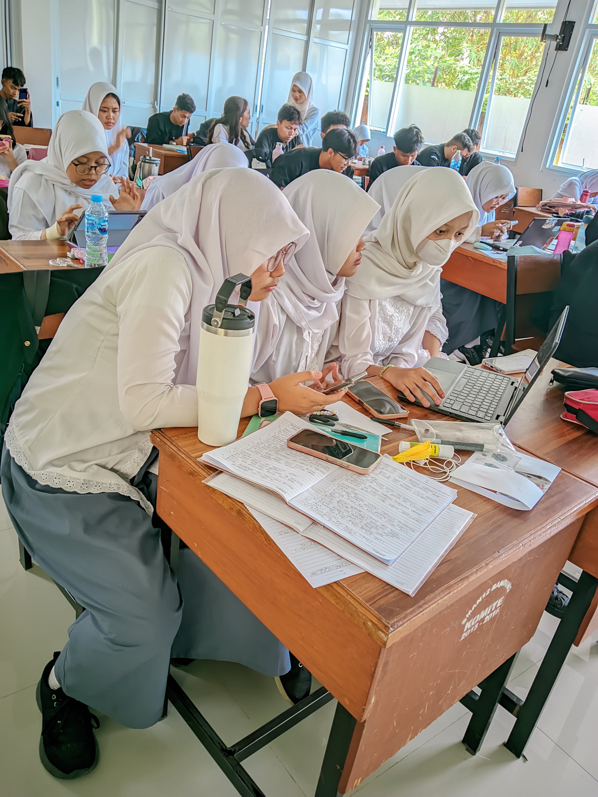
Dokumentasi penggunaan simulator Wokwi sebagai media pembelajaran untuk merancang rangkaian, menulis program, melakukan pengujian, serta mengamati keluaran Arduino sebelum diterapkan pada perangkat fisik.
Simulasi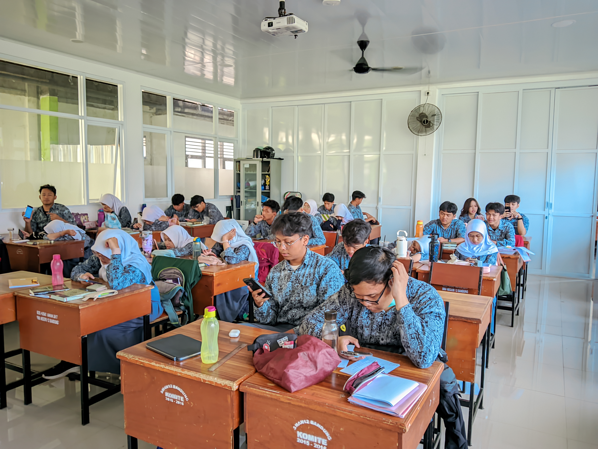
Dokumentasi pelaksanaan ulangan harian pada materi Sistem Komputer sebagai bagian dari asesmen untuk mengukur pemahaman peserta didik terhadap konsep perangkat keras, mikrokontroler, input-output, pemrograman, serta penerapan sistem komputer yang telah dipelajari.
AsesmenDokumentasi Bab 2 dapat terus diperbarui seiring perkembangan praktikum. Dokumentasi dapat mencakup proses pengenalan perangkat, perakitan rangkaian, penulisan kode, pengujian, debugging, penggunaan Arduino Uno dan Arduino Nano, simulasi Wokwi, hasil kerja peserta didik, serta pemberian apresiasi kepada peserta didik yang berhasil menyelesaikan tantangan praktikum.
Dokumentasi pelaksanaan pembelajaran Bab 3 yang membahas berpikir komputasional, algoritma, pemecahan masalah, serta penerapan konsep pemrograman untuk menyelesaikan permasalahan secara sistematis, logis, dan terstruktur.

Dokumentasi kegiatan pembelajaran peserta didik dalam memahami konsep berpikir komputasional melalui proses mengidentifikasi masalah, melakukan dekomposisi, menemukan pola, melakukan abstraksi, serta menyusun solusi secara sistematis.
Computational Thinking
Dokumentasi peserta didik dalam menyusun langkah-langkah penyelesaian masalah menggunakan algoritma yang logis, terstruktur, dan sistematis. Kegiatan ini melatih kemampuan berpikir runtut sebelum solusi diterapkan ke dalam program.
Algoritma
Dokumentasi penerapan algoritma ke dalam kode program melalui kegiatan praktik pemrograman. Peserta didik belajar menerjemahkan langkah-langkah penyelesaian masalah menjadi program serta melakukan pengujian dan perbaikan terhadap kode yang dibuat.
Pemrograman
Dokumentasi pelaksanaan ulangan harian pada materi Berpikir Komputasional dan Algoritma Pemrograman sebagai bagian dari asesmen untuk mengukur pemahaman peserta didik dalam menganalisis masalah, menyusun algoritma, menerapkan logika pemrograman, serta menentukan langkah penyelesaian masalah secara sistematis.
AsesmenDokumentasi Bab 3 dapat terus diperbarui seiring perkembangan pembelajaran. Dokumentasi dapat mencakup kegiatan berpikir komputasional, identifikasi dan dekomposisi masalah, penyusunan algoritma, pembuatan flowchart atau pseudocode, praktik pemrograman, pengujian program, debugging, penyelesaian studi kasus, serta hasil kerja peserta didik.
Dokumentasi pelaksanaan pembelajaran Bab 4 yang membahas konsep jaringan komputer dan internet, komunikasi data, perangkat jaringan, alamat IP, topologi jaringan, serta simulasi dan praktik konfigurasi jaringan menggunakan perangkat lunak.

Dokumentasi kegiatan pembelajaran mengenai konsep jaringan komputer, komunikasi data, perangkat jaringan, serta pemanfaatan internet. Peserta didik mempelajari bagaimana perangkat dapat saling terhubung dan bertukar data dalam sebuah jaringan.
Jaringan
Dokumentasi peserta didik dalam memahami dan menerapkan konsep alamat IP pada jaringan komputer. Kegiatan dilakukan melalui praktik untuk mengenali fungsi alamat IP serta memahami penggunaannya dalam komunikasi antarperangkat.
IP Address
Dokumentasi kegiatan simulasi jaringan menggunakan Cisco Packet Tracer sebagai media pembelajaran. Peserta didik merancang topologi, menghubungkan perangkat, melakukan konfigurasi, serta menguji komunikasi antarperangkat dalam jaringan.
Simulasi
Dokumentasi kegiatan peserta didik dalam memahami berbagai bentuk topologi jaringan serta karakteristik dan penerapannya. Peserta didik menghubungkan konsep topologi dengan kebutuhan komunikasi antarperangkat pada jaringan komputer.
TopologiDokumentasi Bab 4 dapat terus diperbarui seiring perkembangan pembelajaran. Dokumentasi dapat mencakup pengenalan jaringan komputer, perangkat jaringan, komunikasi data, konfigurasi IP Address, praktik berbagai topologi jaringan, simulasi menggunakan Cisco Packet Tracer, pengujian konektivitas, penyelesaian studi kasus jaringan, serta hasil kerja peserta didik.
Dokumentasi pelaksanaan pembelajaran Bab 5 yang membahas dampak perkembangan informatika terhadap kehidupan sosial, etika, keamanan, privasi, budaya, serta tanggung jawab dalam memanfaatkan teknologi digital secara bijak dan bertanggung jawab.

Dokumentasi kegiatan diskusi peserta didik dalam menganalisis berbagai pengaruh perkembangan teknologi informasi terhadap kehidupan masyarakat. Peserta didik diajak mengidentifikasi manfaat, tantangan, serta perubahan perilaku yang muncul akibat perkembangan teknologi digital.
Diskusi
Dokumentasi pembelajaran mengenai pentingnya etika, tanggung jawab, keamanan, privasi, dan perilaku bijak dalam memanfaatkan teknologi digital. Peserta didik memahami pentingnya menjadi pengguna teknologi yang kritis, aman, dan bertanggung jawab.
Etika Digital
Dokumentasi peserta didik dalam menyampaikan hasil analisis, pendapat, argumentasi, dan solusi terhadap berbagai permasalahan sosial yang berkaitan dengan perkembangan informatika. Kegiatan ini melatih kemampuan komunikasi, berpikir kritis, dan penyampaian gagasan secara bertanggung jawab.
Presentasi
Dokumentasi pelaksanaan ulangan harian pada materi Dampak Sosial Informatika sebagai bagian dari asesmen untuk mengukur pemahaman peserta didik mengenai dampak perkembangan teknologi, etika digital, keamanan, privasi, budaya digital, serta tanggung jawab dalam memanfaatkan teknologi secara bijak dan bertanggung jawab.
AsesmenDokumentasi Bab 5 dapat terus diperbarui seiring perkembangan pembelajaran. Dokumentasi dapat mencakup kegiatan diskusi mengenai dampak sosial informatika, etika digital, keamanan dan privasi data, budaya digital, analisis kasus, presentasi peserta didik, penyampaian argumentasi, serta refleksi mengenai penggunaan teknologi secara bijak dan bertanggung jawab.
Dokumentasi kegiatan nonmengajar yang dilakukan selama pelaksanaan PPL 2, meliputi kontribusi dalam mendukung aktivitas sekolah, pendampingan peserta didik, kegiatan keagamaan dan kedisiplinan, koordinasi dengan guru pamong dan dosen pembimbing lapangan, kolaborasi bersama rekan PPL, serta kegiatan perkuliahan dan pengembangan kebersamaan.
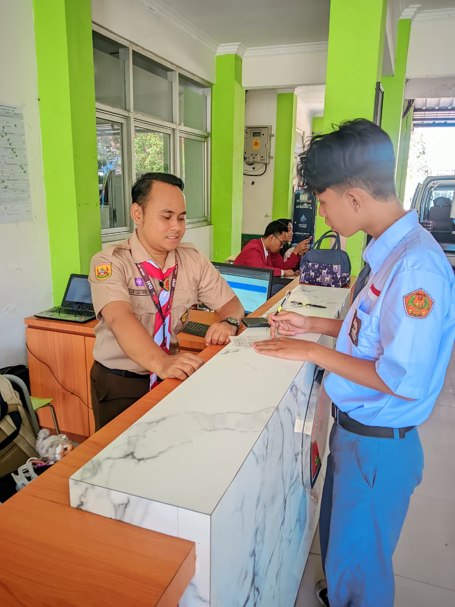
Dokumentasi keterlibatan dalam kegiatan piket untuk mendukung ketertiban, kedisiplinan, dan kelancaran kegiatan belajar mengajar di lingkungan sekolah selama pelaksanaan PPL 2.
Piket KBM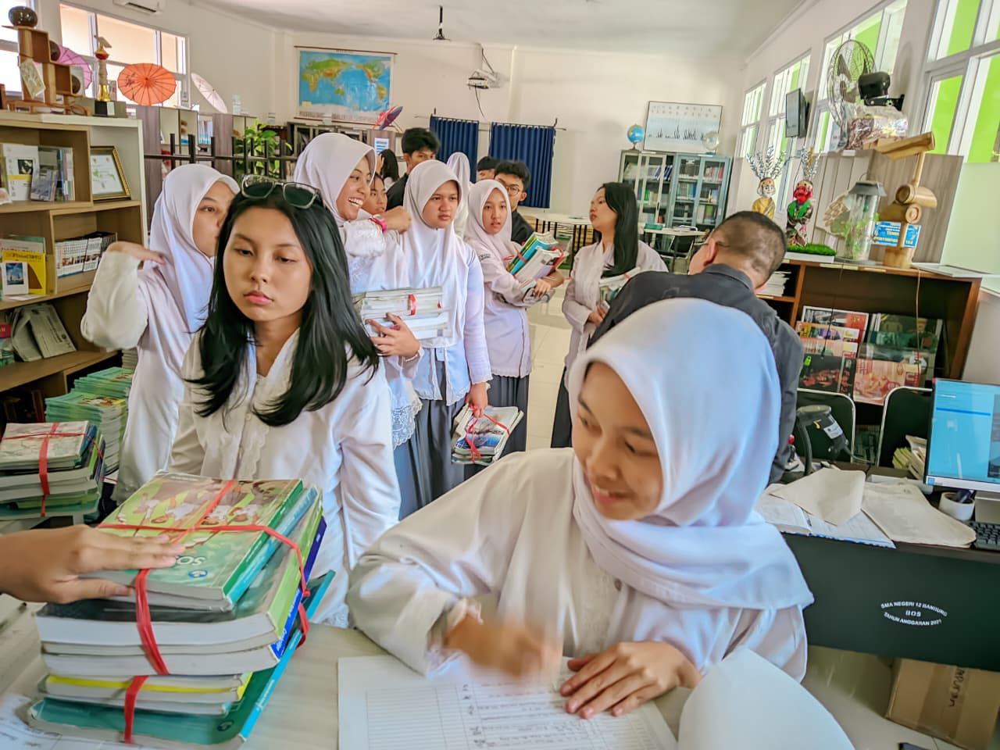
Dokumentasi keterlibatan dalam mendukung keteraturan aktivitas di perpustakaan serta menciptakan lingkungan belajar yang nyaman dan tertib bagi warga sekolah.
Perpustakaan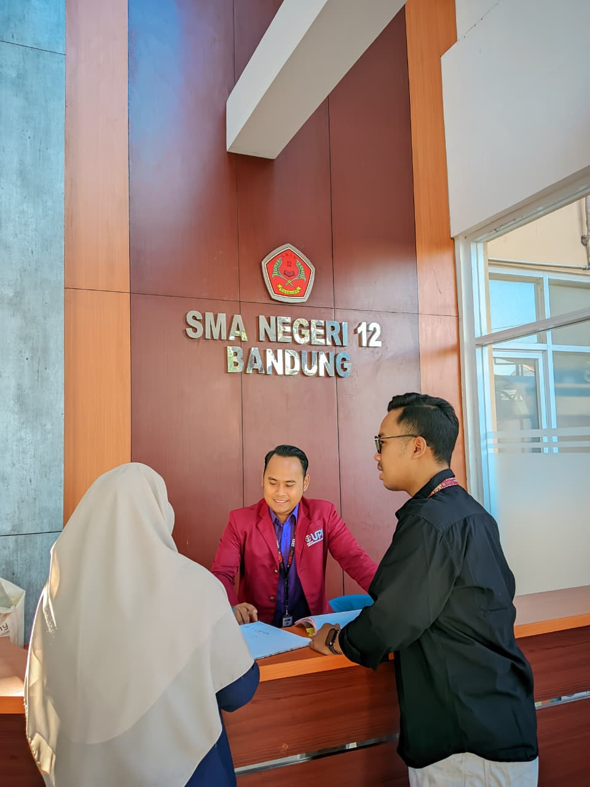
Dokumentasi keterlibatan dalam menjaga keteraturan aktivitas dan membantu kelancaran pelayanan di area lobby sekolah sebagai bagian dari kontribusi terhadap lingkungan sekolah.
Piket Lobby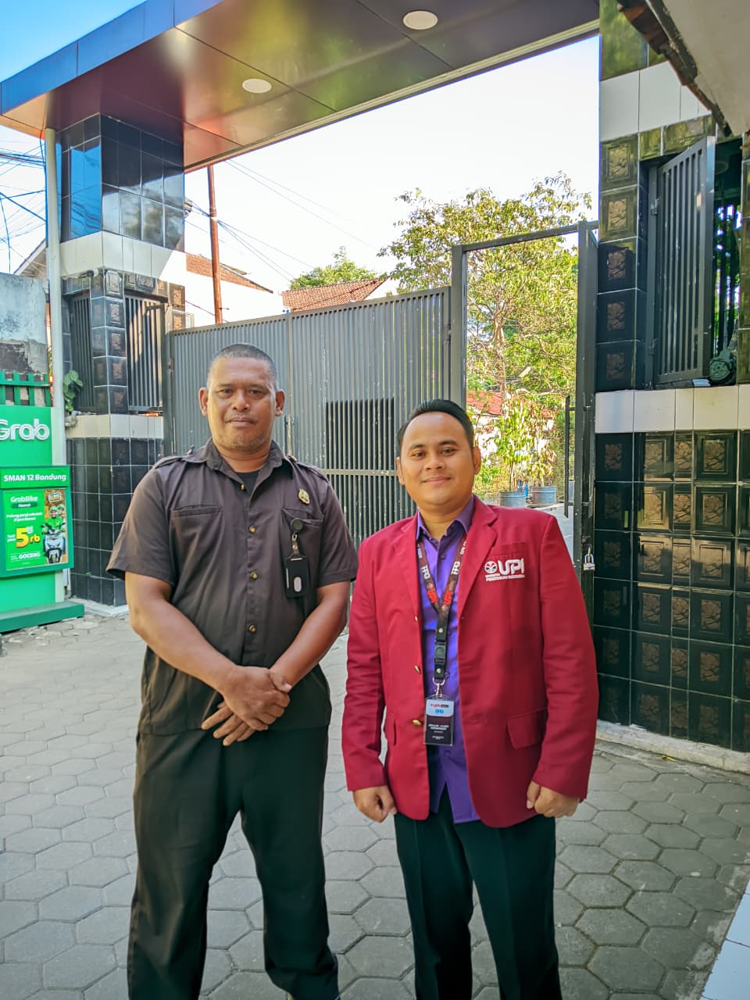
Dokumentasi kegiatan piket di area gerbang sekolah dalam mendukung kedisiplinan, ketertiban, dan kelancaran aktivitas warga sekolah pada saat kedatangan maupun kepulangan.
Piket Gerbang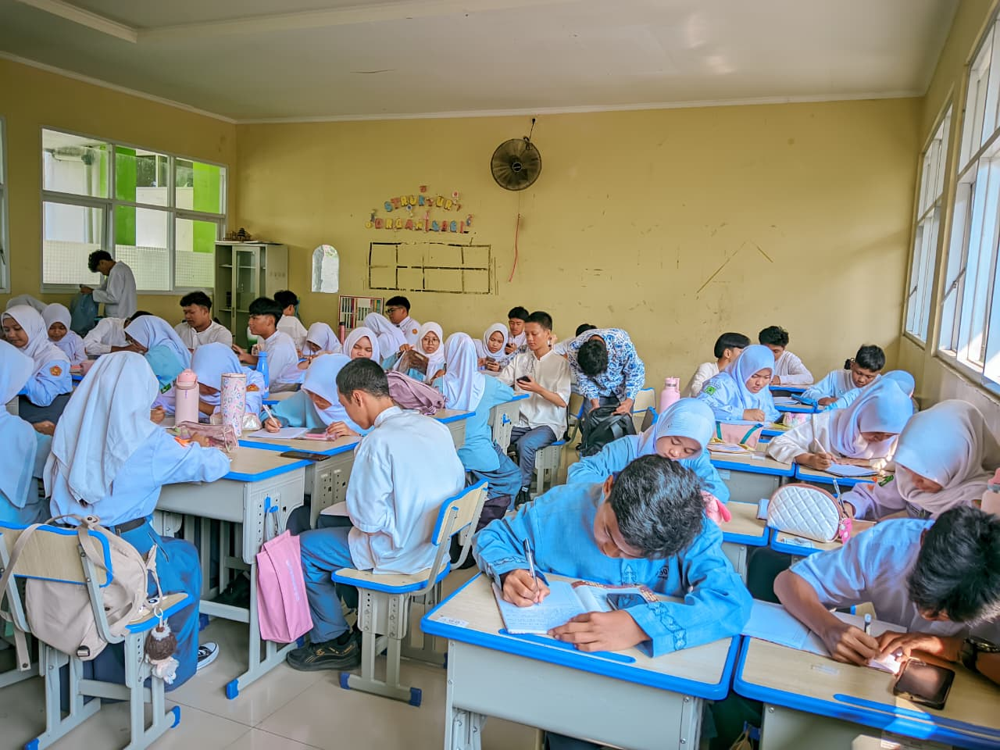
Dokumentasi pendampingan kelas ketika guru berhalangan hadir. Kegiatan dilakukan untuk memastikan peserta didik tetap tertib, berada dalam suasana belajar yang kondusif, dan melakukan aktivitas yang sesuai selama jam pembelajaran.
Pendampingan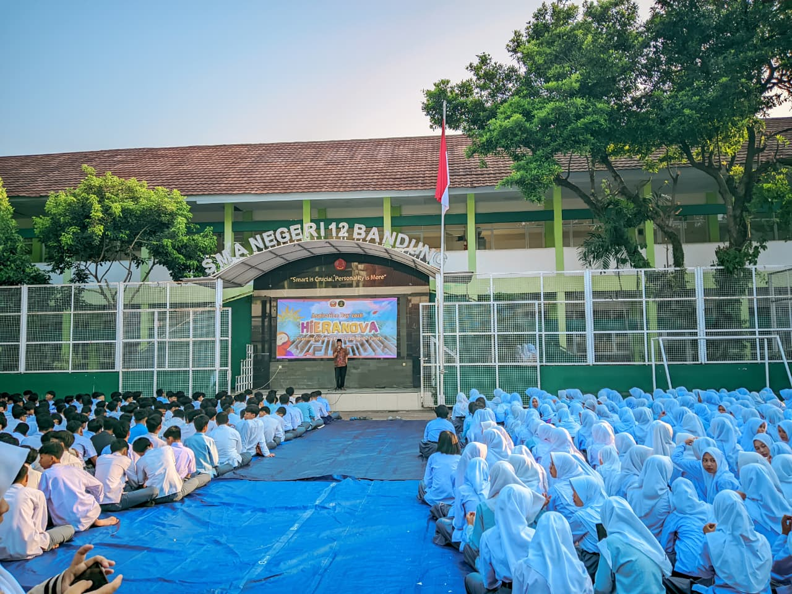
Dokumentasi kegiatan motivasi pagi sebagai bagian dari pembiasaan positif untuk membangun semangat, kedisiplinan, kesiapan, dan motivasi peserta didik sebelum memulai aktivitas pembelajaran.
Motivasi Pagi
Dokumentasi keterlibatan dalam kegiatan pembiasaan keagamaan melalui pelaksanaan sholat Duha sebagai bagian dari aktivitas positif dan pembentukan kebiasaan baik di lingkungan sekolah.
Kegiatan Keagamaan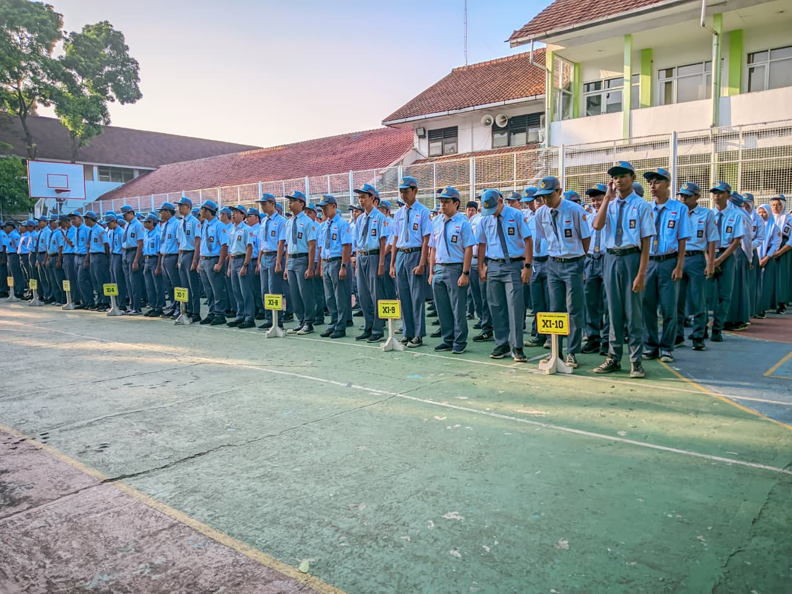
Dokumentasi keikutsertaan dalam kegiatan upacara bendera sebagai bagian dari pembiasaan kedisiplinan, tanggung jawab, nasionalisme, dan penghormatan terhadap nilai-nilai kebangsaan di lingkungan sekolah.
Upacara
Dokumentasi kegiatan diskusi dan koordinasi bersama guru pamong mengenai pelaksanaan pembelajaran, pengelolaan kelas, evaluasi kegiatan PPL, serta refleksi untuk meningkatkan kualitas praktik mengajar.
Guru Pamong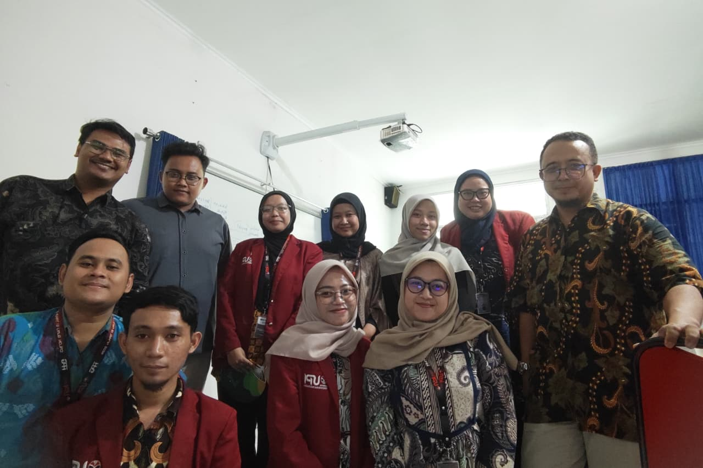
Dokumentasi kegiatan diskusi dan konsultasi bersama dosen pembimbing lapangan mengenai perkembangan PPL, pelaksanaan pembelajaran, refleksi praktik mengajar, serta pengembangan kompetensi sebagai calon guru profesional.
Dosen Pembimbing
Dokumentasi kegiatan diskusi dan berbagi pengalaman bersama rekan sesama PPL dalam membahas pelaksanaan kegiatan di sekolah, permasalahan pembelajaran, pengelolaan kelas, serta saling memberikan masukan dan dukungan.
Kolaborasi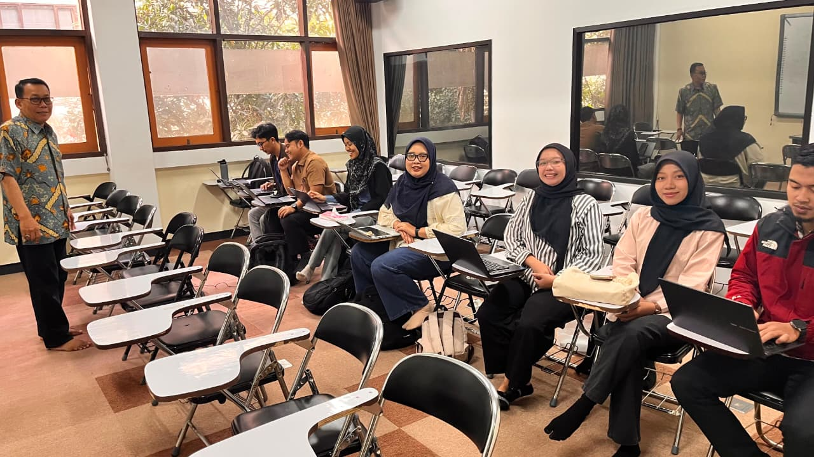
Dokumentasi kegiatan perkuliahan sebagai bagian dari proses pengembangan kompetensi akademik dan profesional dalam mengikuti program Pendidikan Profesi Guru serta memperluas wawasan kependidikan.
Perkuliahan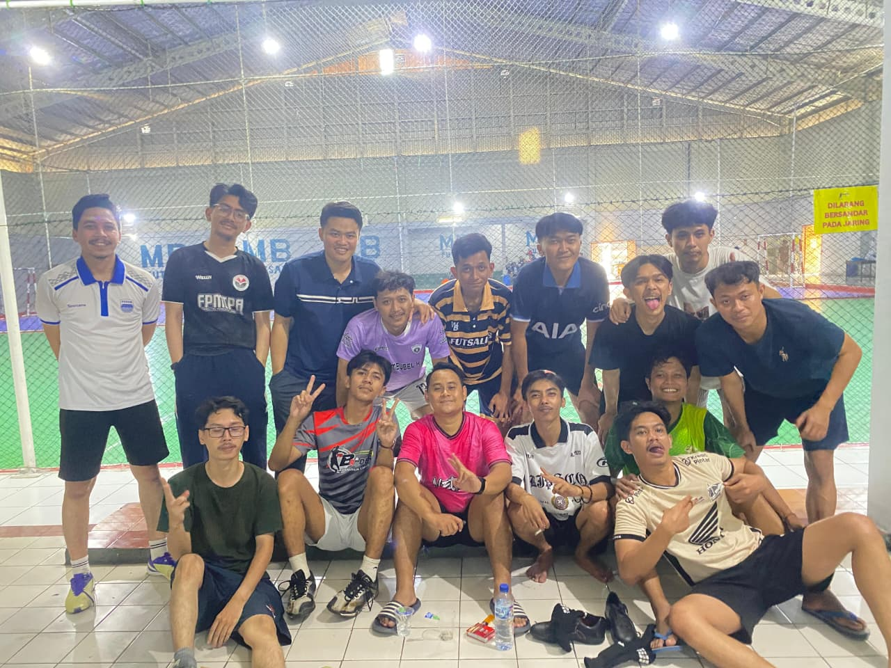
Dokumentasi kegiatan fun match futsal dalam lingkungan perkuliahan sebagai sarana membangun kebersamaan, kerja sama, komunikasi, dan menjaga keseimbangan antara kegiatan akademik dan aktivitas pengembangan diri.
KebersamaanDokumentasi kegiatan fun match futsal bersama guru dan peserta didik sebagai kegiatan kebersamaan di lingkungan sekolah. Kegiatan ini menjadi sarana membangun interaksi positif, sportivitas, komunikasi, kerja sama, dan hubungan yang harmonis antara guru dan peserta didik.
SportivitasDokumentasi kegiatan nonmengajar menggambarkan keterlibatan dalam berbagai aktivitas di luar pembelajaran sebagai bagian dari pengalaman profesional selama PPL 2. Kegiatan tersebut mencakup piket KBM, perpustakaan, lobby, dan gerbang; pendampingan kelas kosong; kegiatan motivasi pagi, sholat Duha, dan upacara bendera; diskusi dan koordinasi bersama guru pamong, dosen pembimbing lapangan, serta rekan sesama PPL; kegiatan perkuliahan; dan aktivitas kebersamaan melalui fun match futsal di lingkungan perkuliahan maupun sekolah.
Dokumentasi proses refleksi dan evaluasi terhadap pelaksanaan pembelajaran selama PPL 2 sebagai bagian dari upaya mengidentifikasi kekuatan, kendala, perkembangan peserta didik, serta menentukan tindak lanjut untuk meningkatkan kualitas pembelajaran berikutnya.

Dokumentasi kegiatan refleksi bersama Guru Pamong setelah pelaksanaan pembelajaran. Kegiatan ini dilakukan untuk membahas proses pembelajaran, keterlibatan peserta didik, kesiapan belajar, respons peserta didik, pengelolaan kelas, serta berbagai kendala dan hal-hal yang sudah berjalan baik selama kegiatan pembelajaran.
Refleksi
Dokumentasi kegiatan mereview hasil Lembar Kerja Peserta Didik (LKPD) yang telah dikerjakan dan dikumpulkan melalui LMS pembelajaran. Hasil pekerjaan peserta didik ditinjau untuk mengetahui tingkat pemahaman, kualitas penyelesaian tugas, kesalahan yang ditemukan, serta kebutuhan tindak lanjut dalam pembelajaran.
EvaluasiDokumentasi refleksi dan evaluasi menjadi bagian penting dalam proses pengembangan profesional selama PPL 2. Refleksi bersama Guru Pamong digunakan untuk meninjau pelaksanaan pembelajaran, keterlibatan dan kesiapan peserta didik, serta menentukan aspek yang perlu diperbaiki. Sementara itu, hasil LKPD yang direview melalui LMS digunakan untuk mengevaluasi pemahaman dan ketercapaian peserta didik, mengidentifikasi kesalahan atau kesulitan belajar, serta merancang tindak lanjut berupa perbaikan pembelajaran, remedial, pengayaan, dan penyesuaian strategi pembelajaran pada pertemuan berikutnya.